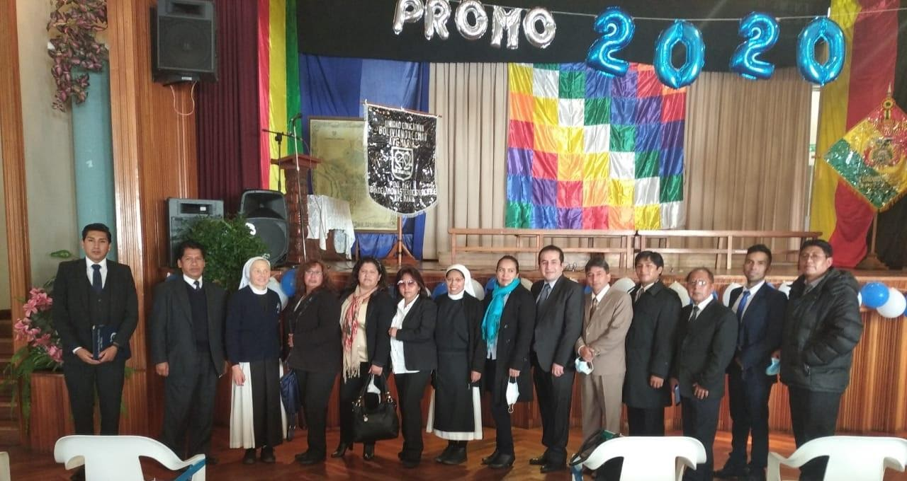

UNIDAD EDUCATIVA
Boliviano Aleman Ave Maria

Desde 1964 crecimos bastante, hasta ser uno de los más grandes establecimientos del país.
Nuestra fundadora fue una religiosa visionaria y hasta hoy el Colegio continúa bajo la dirección de la Comunidad Cistercience.
Bajo el lema del Colegio:"QUE TODOS SEAN UNO", siempre estuvimos - la comunidad de las Hermanas , los profesores y equipo de colaboradores - conscientes, que solamente la unidad hace fuerte e impulsa una obra de magnitud, la dispersión limita la concreción de los objetivos.
Estamos siempre convencidos, que debemos y podemos con nuestra fuerte y nunca vacilante voluntad y con nuestro trabajo constante e incansable de contribuir a una sociedad, un país y un mundo mejor...